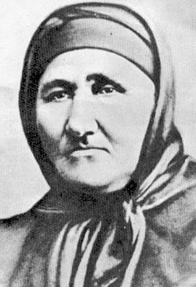

Р усе - селище, възникнало в края на бронзовата епоха.
П рез първи век възниква римският кастел Сегсагинта Приста.
П рез 1388 година е завладян от османците.
Р усе е най-голямото дунавско пристанище в Османската империя.
П рез 1871 година е основан революционен комитет, осъществяващ връзката между БРЦК в Букурещ и комитетите вътре в страната.
В Русе е живяла баба Тонка Обретенова, посветила живота си и този на синовете си за свободата на България. 
П рез 1881 година е открито първото българско морско училище - "Морска Школа"
О бластен град в България, разположен на река Дунав.
Ж ители - 168 128.
Н ай-голямото българско речно пристанище.
К ултурен и промишлен център
з абележителности са: Пантеонът на Възрожденците, музеи, църквата "Света Троица", архитектурно богатсво от възрожденски къщи, декорирани с релефи, стенописи и скулптури.
О От речната градина (кея) се разкрива прекрасна гледка към река Дунав.
У чебните заведения в града предлагат образование от високо ниво.
Г радът предлага разнообразни развлечения.
Изработил: Симо Александров, 12в, 22/01/2020